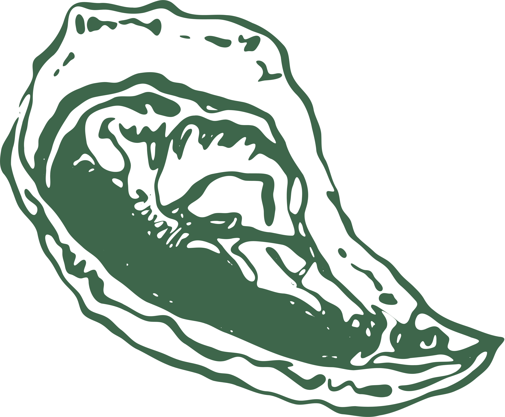
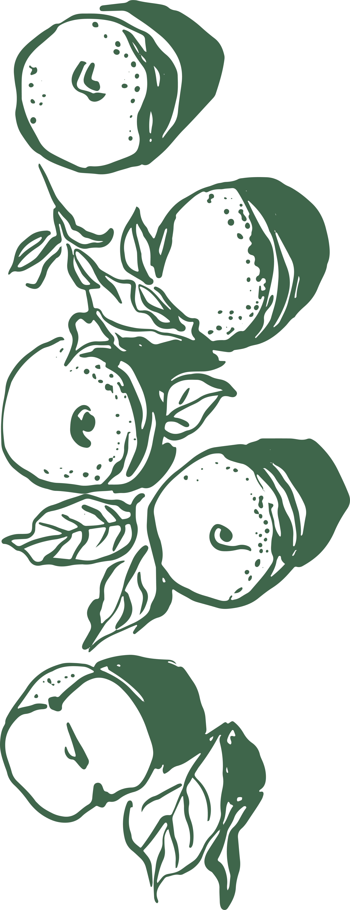
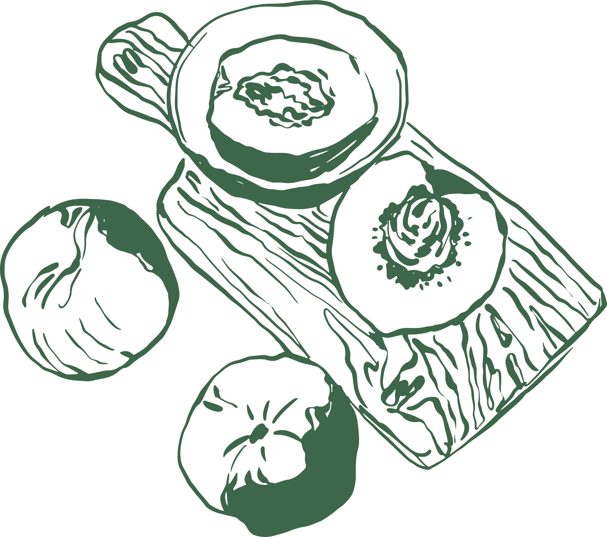
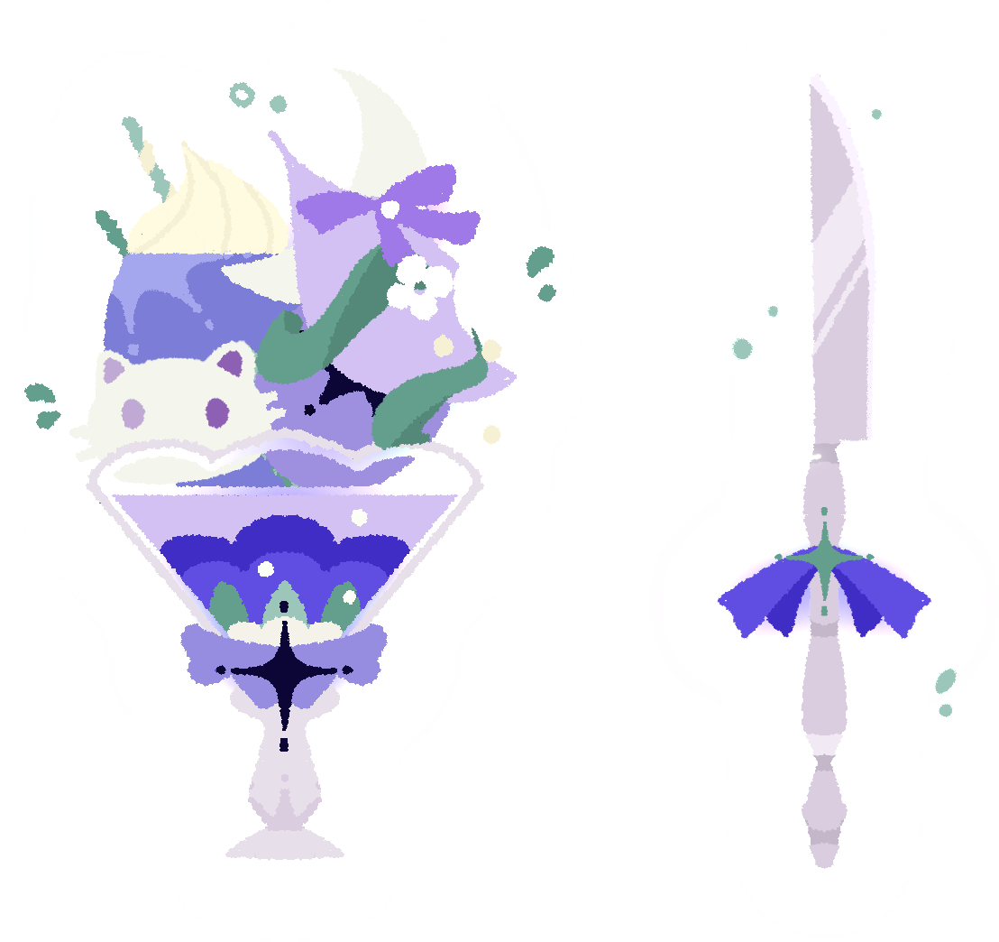

第一次振翅 —— 關於「我」的練習與命名。
The First Trembling of Wings —— attempts at naming the self.
我
Me
關於一隻貓、一隻蛾與一條鱷魚。
About a cat, a moth and a crocodile.
實體化幻想
Materialized Fantasies
一些精美而可笑的得意之作。
Some Exquisite Yet Ridiculous Masterpieces of Pride.
私人尺度 —— 電影、書籍、香水，以及我拒絕中立的一切。
A Private Scale —— films, books, perfumes, and everything I refuse to be neutral about.
螢幕迷宮
The Screen Labyrinth
嗅覺檔案
The Olfactory File
千萬次應驗 —— 思考、懷疑與被證實的瞬間。
Ten Thousand Foreseen —— thoughts, doubts, and moments confirmed.
無鄉
Homelessness
漂泊感彷彿跟隨血液與臍帶傳到了我的身體裡。
The feeling of drifting was passed into my body through my blood and umbilical cord.
純粹的想象世界
A World of Pure Imagination
跟我來吧，你會看到純粹想象力構成的世界。
Come with me, then you'll be, in a world of pure imagination.
春天大病一場
A Grave Illness in Spring
一個已經過去咗嘅生日。
A birthday long gone.
月亮停駐時 —— 在城市與遠方之間的行走。
When the Moon Pauses —— wanderings between cities and elsewhere.
首爾，首爾
Seoul, Seoul
在這座城市，靈魂如樹上的蘋果一般容易墜落。
In this city, the soul falls as easily as apples from a tree.
香港·趨光畏光
Hong Kong·Phototaxis and Photophobia
愛慾與食慾於我或許是同一種慾望。
Desire and appetite, for me, are perhaps the same kind.
珍珠的尖叫 —— 他人的故事，在我之中變形。
Pearl’s Scream —— stories of others, refracted through me.
梅子雞之味
Poulet aux Prunes
我不會再夢到德黑蘭。
I will never dream of Tehran again.
兩段時光的紛爭：與亞瑟·柯克蘭先生的一次訪談
A Clash of Eras: An Interview with Mr Arthur Kirkland
萬物皆是褪色的照片。
Everything is a faded photograph.
一封倏然起筆的信
A letter started all at once
我知道，在我身上，有一個不可戰勝的春天。
I know that within me, there is an invincible spring.
一封未曾出寄的信
A letter never sent beyond
如果生命的答案是永恆的隆冬，你的存在便讓我嗅到了春風。
If the answer of life is an eternal winter, your presence lets me breathe the spring wind.
拂過蝴蝶的淚眼
Through the Tearful Eyes of a Butterfly
歡樂如蝴蝶翩躚。
Happiness is a butterfly.
情書
Love Letter
每一封信都有收件人，但不一定只有一個。
Every letter has a recipient, but not necessarily only one.
巴士底的入殮師
The Embalmer of the Bastille
當國家決定何謂美德，總有人會成為它的祭品。
When a republic defines virtue, someone inevitably becomes its sacrifice.
神明的死因
The Death of God
祂死於我摘下十字架的那一刻。
He died the moment I took off my cross.
彌諾陶洛斯
The Minotaur
他戴著怪物的名字太久，久到連烈火都燒不掉了。
He wore a monster’s name so long that even the fire could not burn it off.
羅曼蒂克悔罪經
Romantic Confession of Sins
他以血為顏料，畫活了一幅畫，然後把自己畫進了畫裡。
He painted a living portrait with his own blood, and then painted himself into it.
王子的珍藏
The Prince's Collection
一隻野貓，翻窗而入，從此再也沒有離開過底片。
A stray cat climbed through the window and never left negatives again.
月亮的野獸
The Beast of the Moon
拿走吧，把我的眼睛也拿走。
Take it away. Take my eyes too.
約旦河與黃金時代
The Jordan River and the Golden Age
浪會一直來。
The waves will keep coming.
被借用的傷口 —— 我透過他人的身體書寫世界。
Borrowed Wounds —— I write the world through borrowed bodies.
風光無限
Boundless Scenery
当花有了語言。
When the flowers found their voice.
堅定的王子與快樂的錫兵
The Steadfast Prince and the Happy Tin Soldier
我們不知道自己是谁卻有生命，不知道去哪卻有未來。
We don't know who we are, yet we have life. We don't know where we're going, yet we have a future.
寒枝雀靜
En duva satt på en gren och funderade på tillvaron
他怎么会怨他夺走了他的自我呢？他多爱他啊。
How could he resent him for taking away his self? He loved him too much.
滿堂紅
Rouge Royale
我生逢時，定要建立更偉大罕見的武功。
I was born at this very time to achieve deeds greater and rarer than any.
奔向那山
Running up that Hill
给我一颗心。
Give me a heart.
九
Nine
眼淚比河水要乾淨。
Tears should be collected too, for even tears are cleaner than the river water.
渴望
Longing
生命，即使有痛苦，也勝過墳墓之巔。
Life, even with its sorrows, is better than the summit of the grave.
雨蛙
The Tree Frog
因為你是一隻鷹。
For you are an eagle.
蘇訶縛帝
Svāhā
此處通向極樂世界。
This is the path to the land of bliss.
終端誤植 —— 獻給我的摯友沒暱稱女士。獻給亞瑟與弗朗西斯與宇宙。
A Terminal Mis-transliteration —— To my dear friend, Ms. No Nickname. To Arthur, to Francis, and to the cosmos.
啟示錄
Apocalypse
原來我從不需要一個更好的未來。
It turns out I never needed a better future.
先知書
The Book of Prophets
在宇宙的尺度下，過去、未來、前進、後退，所有的概念都失去了意義。
不應期盼他人承諾的幸福，就像不應期盼宇宙為一切準備了答案。
好在，在懷疑一切之後，我們還剩下賦予彼此的意義。——沒暱稱女士
On the cosmic scale, all concepts—past, future, forward, backward—lose their meaning.
One should not expect happiness promised by others, just as one should not expect the universe to have prepared answers for everything.
Fortunately, after doubting everything, we still have the meaning we give to each other.
— Ms. No Nickname
後記
Afterword
你們的新世界在輕視我的那一刻便已終結。
The new world ended the moment you looked down on me.
語言的邊界 —— 他人的故事，在此失效。
At the Limits of Language —— Stories of others no longer hold.
維里狄塔斯
Veriditas
来吧。
Come.
看
Stare
吃！弗朗西斯，吃吧！
EAT! Francis, EAT!
遠方天氣晴朗
The Weather Is Clear Far Away
有些人並非迷路。他們只是回到了自己一直是的那隻動物。
Some people are not lost. They have simply returned to the animal they always were.
Aiú
Aiú
河流是一種分離。渡過它，就是渡過我自己。
The river is a separation. To cross it is to cross myself.
誰殺死了酒神
Who Killed Dionysus
一個正常的人，就是一個理想中的完人。
A normal person is an ideal, complete person.